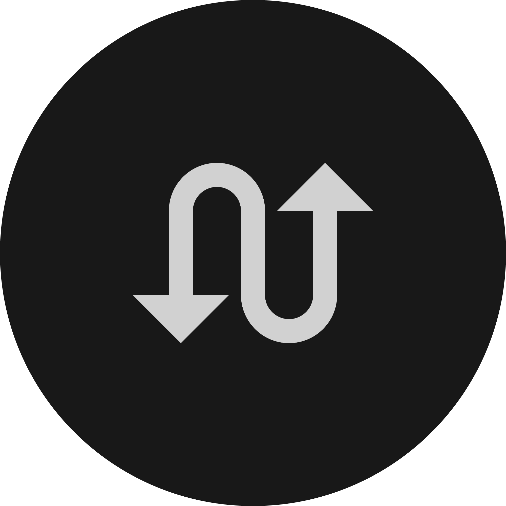
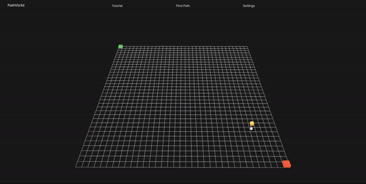
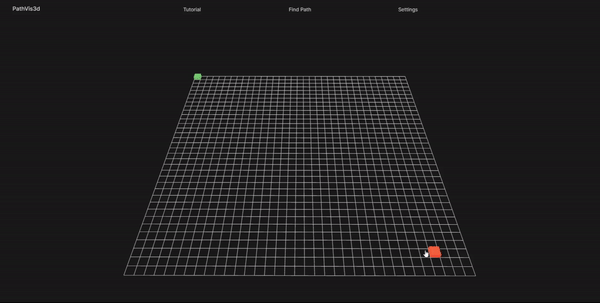
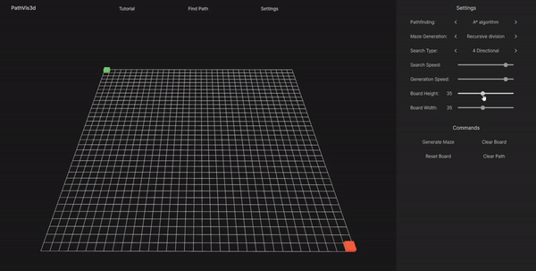
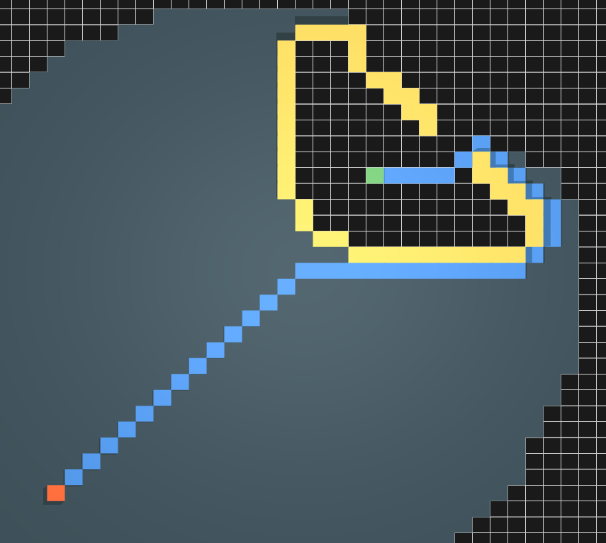
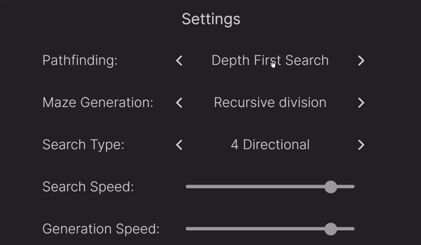
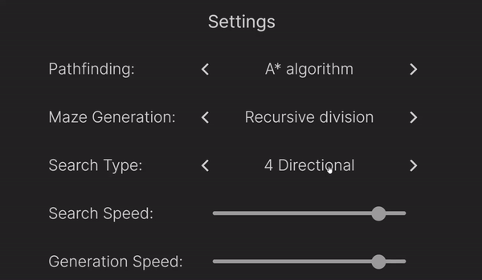
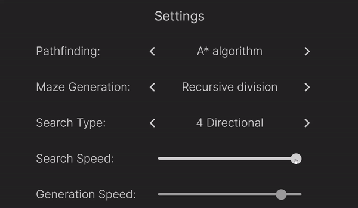
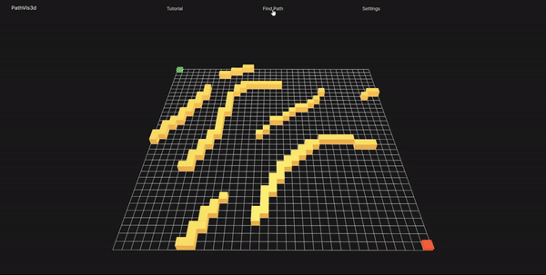
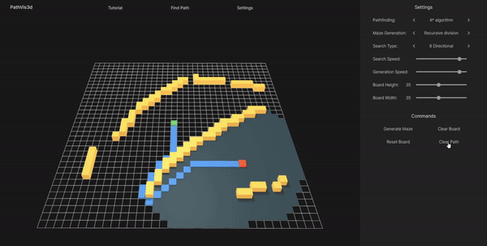

What is PathVis3d?
PathVis3d is a project created to visualize pathfinding and maze generation algorithms in 3D.
If you want to know more about it, check it out on GitHub by clicking here or on the icon in the bottom left.
Controls
Drag the mouse outside of the grid to rotate the view.
Scroll to zoom in and out.
Click the Settings button at the top of the screen to toggle the Settings menu.

Adding Walls
Click and drag the mouse on the grid to create walls.
Click on the wall to delete or drag while holding D to delete multiple walls.
Start and Finish positions
Drag the red node to change the start position.
Drag the green node to change the finish position.
Board
Change the board's size by moving the Board Height and Board Width range sliders.
Pathfinding
Pathfinding is the plotting of the route between two points.
Pathfinding
The current pathfinding algorithm can be changed in the Settings menu. To do so, click on the arrows or on the algorithm itself.
Pathfinding
In this application, pathfinding can be either 4 directional or 8 directional, as the user chooses.
The cost of moving to the adjacent cell is 10, while to diagonal, it's 14.
Pathfinding
Pathfinding speed can be changed by moving the Search Speed range slider.
Pathfinding
To start the visualization of the current algorithm, click on the Find Path button in the top center.
Maze Generation
To visualize maze's generation, pick an algorithm, adjust its speed and click Generate Maze button.
Other Commands
Clear Board - removes all walls and pathfinding visualization.
Reset Board - removes all walls, pathfinding visualization and sets start node's as well as finish node's positions to default.
Clear Path - clears pathfinding visualization.
